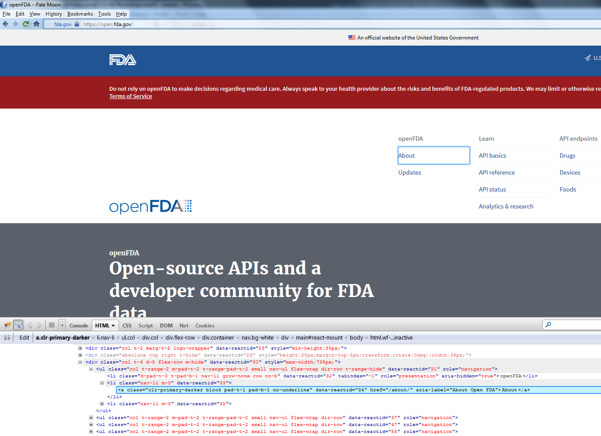

Web scraping
We begin with a discussion on web scraping. The term itself is ambiguous, and could potentially mean anything1, but the gist is that there is something out on the web (or some connected machine) that we want, and we’d like to use R to get it. This section won’t (at least for now) get into lower level utilities such as that provided by httr or Rcurl, though some packages will be using them under the hood. Instead, focus will be on higher-level approaches with an eye toward common tasks.
As a starting point, open a browser and go to a website of your preference. For most browsers, Ctrl+U will open up the underlying html file. If you’re on a typical webpage it will almost certainly look like a mess of html, JavaScript, XML and possibly other things. Simpler pages are more easily discernible, while more complex/secure pages are not. The take home message is that what you want is represented by something in there, and you’ll have to know something about that structure in order to get it.
Unfortunately, a lot of web design is quite poor2, which will make your job difficult. Even when the sole purpose of a site is to provide data, you can almost be sure that the simplest/most flexible path will not be taken to do so. Thankfully you can use R and possibly other tools to make the process at least somewhat less painful.
Direct data download
One thing to be aware of is that you can get data from the web that are in typical formats just as you would any file on your own machine. For example:
mydata = read.csv('http://somewebsite/data.csv')I wouldn’t even call this web scraping, just as you wouldn’t if you were getting a file off a network connection. However, if you’re just starting out with R, it’s important to know this is possible. In any case, do not make things more difficult than they need to be- if the file is available just grab it.
Key concepts
The web works in mysterious ways, but you don’t have to know a lot about it to use it or benefit from its data. Many people have had their own websites for years without knowing any html. For our purposes, it helps to know a little and is actually required, at least so that we know what to look for.
Common elements or tags3 of a webpage include things like div table and ul and body, and within such things our data will be found. Some common ones include:
divandspan: used when other elements are not appropriate but one still wants to define classes, ids etc.pparagraphalink (technically ‘anchor’)ulolliststabletrtdtables, table rows, table data (cell)h#i.e.h1h2etc. headersimgimages
Consider the following:
<h3> This header denotes a section of text
<img src="picture_of_cat.png"></img>
<p> This is a paragraph! </p>
<p> Here is another! This one has <a href="www.someurl.com">a link</a>! </p>As an example, if we wanted to scrape every paragraph that had the word paragraph in it, we’d need to first get all the <p> elements and work from there.
Just like in other programming languages, these parts of a webpage have their own class, e.g. <table class="wikitable sortable">, and this allows even easier access to the objects of specific interest. Take a look at the source for the Wikipedia page for towns in Michigan.

The id is another attribute, or way to note specific types of objects. Unlike classes, which might be used over and over within a page, ids are unique, and thus for web scraping, probably more useful when appropriate to the task. Also, while elements can have multiple classes, they can have only one id. Any particular element might also have different attributes that specify things like style, alignment, color, file source etc.
The sad thing is that attributes are greatly underutilized in general. For example, perhaps you found a page with several html tables of data, one for each year. It would have been simple to add an id = year to each one, enabling you to grab just the specific year(s) of interest, but it’ll be rare that you’d find a page that goes that far. Part of this could be due to the fact that much content is auto-generated via WYSIWYG editors, but these are not very professional pages if so, which might cause concern for the data given such a source. Take a look at the openfda.gov site:

It has lots of attributes for practically every element, which would make getting stuff off the page fairly easy, if it didn’t already have an APIs.
In any case, you’ll at least need to know the tag within which the data or link to it may be found. Classes and ids will help to further drill down the web page content, but often won’t be available. In such a case you might have to grab, for example, all the links, and then use some regular expression to grab only the one you want. See this link for more on relations between attributes and elements.
The basic approach
To summarize the basic approach, we can outline a few steps:
- If a direct link or API is available use it4
- Inspect the page to find the relevant tags within which the content is found
- Start with a base URL
- Use the relevant R packages to parse the base page
- Extract the desired content
Examples
One of the packages that can make scraping easy is rvest, which is modeled after/inspired by the Beautiful Soup module in Python5. As the goal here is to get you quickly started, we won’t inundate you with a lot of packages yet. I recommend getting comfy with rvest and moving to others when needed.
Tables
Wikipedia
A lot of Wikipedia has pages ripe for the scraping, but it also has an API, so that we can use it as an example later as well. Between the page layout and rvest it will be very easy to get the content. So let’s do so. Back to the page of towns in Michigan. Let’s see if we can get the table of towns with their type, county, and population. First things first, we need to get the page.
page = 'https://en.wikipedia.org/wiki/List_of_cities,_villages,_and_townships_in_Michigan'
library(rvest)
towns = read_html(page)
str(towns)List of 2
$ node:<externalptr>
$ doc :<externalptr>
- attr(*, "class")= chr [1:2] "xml_document" "xml_node"towns{xml_document}
<html class="client-nojs" lang="en" dir="ltr">
[1] <head>\n <meta charset="UTF-8"/>\n <title>List of cities, villages, and townships in Michigan - Wikipedia, the ...
[2] <body class="mediawiki ltr sitedir-ltr mw-hide-empty-elt ns-0 ns-subject page-List_of_cities_villages_and_townshi ...The result of read_html is an xml_document class object. For the uninitiated, XML is a markup language (Extensible Markup Language) like HTML, and which allows one to access its parts as nodes in tree6, where parents have children and grandchildren etc. It will require further parsing in order to get what we want, but it was easy enough to snag the page. Let’s look at some of the nodes.
html_nodes(towns, 'ul') %>% head # unordered lists (first few){xml_nodeset (6)}
[1] <ul><li><a href="#A">A</a></li>\n<li><a href="#B">B</a></li>\n<li><a href="#C">C</a></li>\n<li><a href="#D">D</a> ...
[2] <ul><li><a href="#See_also">See also</a></li>\n<li><a href="#References">References</a></li>\n<li><a href="#Exter ...
[3] <ul><li><a href="/wiki/Administrative_divisions_of_Michigan" title="Administrative divisions of Michigan">Adminis ...
[4] <ul><li><a rel="nofollow" class="external text" href="https://web.archive.org/web/20040908085409/http://www.vienn ...
[5] <ul><li><a rel="nofollow" class="external text" href="http://www.census.gov/geo/www/gazetteer/places2k.html">Cens ...
[6] <ul><li class="nv-view"><a href="/wiki/Template:Michigan" title="Template:Michigan"><abbr title="View this templa ...html_nodes(towns, 'a') %>% head # links {xml_nodeset (6)}
[1] <a id="top"/>
[2] <a href="#mw-head">navigation</a>
[3] <a href="#p-search">search</a>
[4] <a href="/wiki/Wikipedia:Citing_sources" title="Wikipedia:Citing sources">list of references</a>
[5] <a href="/wiki/Wikipedia:External_links" title="Wikipedia:External links">external links</a>
[6] <a href="/wiki/Wikipedia:Citing_sources#Inline_citations" title="Wikipedia:Citing sources">inline citations</a>html_nodes(towns, 'table') # tables{xml_nodeset (5)}
[1] <table class="plainlinks metadata ambox ambox-style ambox-No_footnotes" role="presentation">\n <tr><td class="mb ...
[2] <table class="wikitable sortable">\n <tr><th>Place</th>\n<th>Type</th>\n<th>County</th>\n<th>2010 Population</th ...
[3] <table role="presentation" class="mbox-small plainlinks sistersitebox" style="border:1px solid #aaa;background-co ...
[4] <table class="nowraplinks collapsible autocollapse navbox-inner" style="border-spacing:0;background:transparent;c ...
[5] <table class="nowraplinks collapsible autocollapse navbox-inner" style="border-spacing:0;background:transparent;c ...Perhaps now you are getting a sense of what we can possibly extract from this page. It turns out that what we want is a table element, and in particular, the one that is of class wikitable sortable. This will make things very easy. But what if we didn’t know what the element was? it turns out there are tools like SelectorGadget7 that can be used to inspect the elements of any webpage. SelectorGadget can be added as a browser extension, which would allow you to easily turn it on and off as needed. The following depicts what the Michigan towns looks like when using SelectorGadget and selecting a link.

It highlights everything else in the page that is of a similar type (i.e. other links), as well as provides the css/xml info that we would need to grab that particular item.
As mentioned, we want the wikitable sortable class table, so lets grab that. The rvest package comes with the html_table function, that will grab any table and attempt to put it into a data.frame object. I only show the first couple because one of the tables comes out pretty messy at the R console.
str(html_table(towns)[1:3])List of 3
$ :'data.frame': 1 obs. of 2 variables:
..$ X1: logi NA
..$ X2: chr "This article includes a list of references, related reading or external links, but its sources remain unclear because it lacks "| __truncated__
$ :'data.frame': 2185 obs. of 4 variables:
..$ Place : chr [1:2185] "Acme" "Acme Township" "Ada Township" "Adams Township, Arenac County" ...
..$ Type : chr [1:2185] "unincorporated community" "township" "township" "township" ...
..$ County : chr [1:2185] "" "" "Kent" "Arenac" ...
..$ 2010 Population: chr [1:2185] "" "4,375" "13,142" "563" ...
$ :'data.frame': 1 obs. of 2 variables:
..$ X1: logi NA
..$ X2: chr "Wikimedia Commons has media related to Populated places in Michigan."We know which class object we want though, so we could have used html_nodes to grab only that object and work with it.
html_nodes(towns, '.wikitable.sortable') %>%
html_table() %>%
.[[1]] %>%
head() Place Type County 2010 Population
1 Acme unincorporated community
2 Acme Township township 4,375
3 Ada Township township Kent 13,142
4 Adams Township, Arenac County township Arenac 563
5 Adams Township, Hillsdale County township Hillsdale 2,493
6 Adams Township, Houghton County township Houghton 2,573Here the . in .wikitable.sortable represents the class/subclass (use # for ids). In general though, if you know it’s a table, then use html_table. When the table has no class then you’ll have to use a magic number or some other means to grab it, which may not be as robust. Of course, the class itself might change over time also.
So let’s put this all together.
library(stringr)
towns %>%
html_table() %>%
.[[2]] %>%
rename(Population = `2010 Population`) %>%
mutate(Population = strtoi(str_replace_all(Population, ',', '')),
Type = factor(Type)) %>%
filter(!Type %in% c('unincorporated community', 'CDP')) %>%
ggplot(aes(x=Population, fill=Type, color=Type)) +
scale_x_log10() +
geom_density(alpha=.2) +
theme(panel.background=element_rect(fill='transparent', color=NA),
plot.background=element_rect(fill='transparent', color=NA))
I won’t go into details about the rest of the code regarding data processing, as that’s for another workshop. For now it suffices to say that it didn’t take much to go from URL to visualization.
Basketball Reference
As an additional example let’s get some data from basketball-reference.com. The following gets the totals table from the URL8. Issues include header rows after every 20th row of data, and converting all but a few columns from character to numeric.
url = "http://www.basketball-reference.com/leagues/NBA_2016_totals.html"
bball = read_html(url) %>%
html_node("#totals_stats") %>% # grab element with id 'total_stats'
html_table() %>% # the data
filter(Rk != "Rk") %>% # remove header rows
mutate_at(vars(-Player, -Pos, -Tm), as.numeric) # convert to numeric
str(bball)'data.frame': 578 obs. of 30 variables:
$ Rk : num 1 2 3 4 5 6 7 8 9 10 ...
$ Player: chr "Quincy Acy" "Jordan Adams" "Steven Adams" "Arron Afflalo" ...
$ Pos : chr "PF" "SG" "C" "SG" ...
$ Age : num 25 21 22 30 27 27 30 20 26 34 ...
$ Tm : chr "SAC" "MEM" "OKC" "NYK" ...
$ G : num 59 2 80 71 59 60 74 8 79 64 ...
$ GS : num 29 0 80 57 17 5 74 0 28 57 ...
$ MP : num 876 15 2014 2371 861 ...
$ FG : num 119 2 261 354 150 134 536 5 191 215 ...
$ FGA : num 214 6 426 799 315 ...
$ FG% : num 0.556 0.333 0.613 0.443 0.476 0.596 0.513 0.5 0.516 0.458 ...
$ 3P : num 19 0 0 91 0 0 0 0 0 15 ...
$ 3PA : num 49 1 0 238 1 0 16 0 0 42 ...
$ 3P% : num 0.388 0 NA 0.382 0 NA 0 NA NA 0.357 ...
$ 2P : num 100 2 261 263 150 134 536 5 191 200 ...
$ 2PA : num 165 5 426 561 314 ...
$ 2P% : num 0.606 0.4 0.613 0.469 0.478 0.596 0.521 0.5 0.516 0.468 ...
$ eFG% : num 0.6 0.333 0.613 0.5 0.476 0.596 0.513 0.5 0.516 0.474 ...
$ FT : num 50 3 114 110 52 60 259 0 46 90 ...
$ FTA : num 68 5 196 131 62 84 302 0 73 138 ...
$ FT% : num 0.735 0.6 0.582 0.84 0.839 0.714 0.858 NA 0.63 0.652 ...
$ ORB : num 65 0 219 23 75 86 176 2 162 104 ...
$ DRB : num 123 2 314 243 194 202 456 4 262 192 ...
$ TRB : num 188 2 533 266 269 288 632 6 424 296 ...
$ AST : num 27 3 62 144 31 50 110 0 76 70 ...
$ STL : num 29 3 42 25 19 47 38 1 26 110 ...
$ BLK : num 24 0 89 10 36 68 81 2 42 18 ...
$ TOV : num 27 2 84 82 54 64 99 1 69 78 ...
$ PF : num 103 2 223 142 134 139 151 1 147 175 ...
$ PTS : num 307 7 636 909 352 ...Text
A lot of times we’ll want to grab text as opposed to tables. See the API chapter for an example, and the html_text function in the rvest package.
Images
Images are fairly easy because they are simply files with specific extensions like svg, png, gif etc. In that sense, if one knows the actual location of the image already, a function like download.files can be used to grab it directly. Other times it may not be known, and so we can use a similar approach as before to grab the file.
base_page = read_html('https://en.wikipedia.org/wiki/Main_Page')
picofday_location = base_page %>% # get the main page
html_nodes('#mp-tfp') %>% # extract the div with 'today's featured picture', i.e. tfp
html_nodes('img') %>% # extract the img
html_attr('src') # grab the source locationWith location in hand we can now download the file, and even display it in R. The following requires the grid and jpeg packages.
download.file(url=paste0('https:', picofday_location), destfile='img/picofday.jpg', mode='wb')
picofday = jpeg::readJPEG(source='img/picofday.jpg')
df = data.frame(x=rnorm(1), y=rnorm(1)) # note that any random df will suffice
qplot(data=df, geom='blank') +
annotation_custom(grid::rasterGrob(picofday)) +
theme_void()Note that an alternative approach that might work on some websites would be to extract all the images and then the one with a relevant naming convention. This doesn’t work for the Wikipedia main page because there is nothing to identify which image is the featured picture by file name alone.
Issues
As mentioned, the ease with which you will be able to scrape a website will depend a lot on how well the page/site is put together. Many are cookie-cutter templates designed with no regard to data availability whatsoever, others are just the result of amateurs that do not do web design for a living, and still others are just poorly designed. In addition, some websites may have security or other server back end things to consider that require much of the content to not be made easily available, perhaps intentionally.
On the other hand, other sites will make it as easy as a URL pointing to a csv file, or an API that is easily maneuverable. The main thing is that you must plan ahead for it to either not be easy to get, and/or to be ready for heavy post-processing even when you get the bulk of what you want. The goal should be to make the process automatic such that only a fundamental site or API change will cause you to have to change your code again.
Called by various names: web harvesting, data scraping (presumptuous), etc.↩
Think about your R code, now remove the spaces, indent as irregularly as possible, do not comment anything, use reserved words for common names, don’t name important parts of your site, reject any known coding style, and use default settings. That would describe about 99% of the typical website design I come across.↩
There is subtle distinction between tags versus elements, but which won’t really matter to us.↩
APIs change so regularly that in some cases it might be easier to scrape as above, especially if the site itself changes relatively rarely and still allows direct access to the desired content.↩
I highly recommend Beautiful Soup also. Until rvest and related packages came along, I preferred using Beautiful Soup to what was available in R.↩
Think graphical models rather than spruce.↩
The openfda site was depicted using the Mozilla firebug extension.↩
Technically this data can be downloaded as a supplied csv.↩